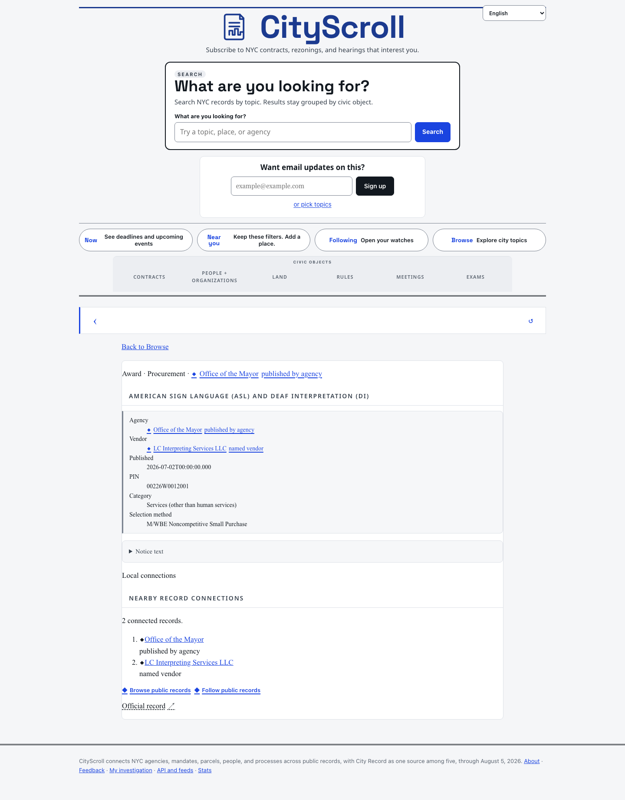
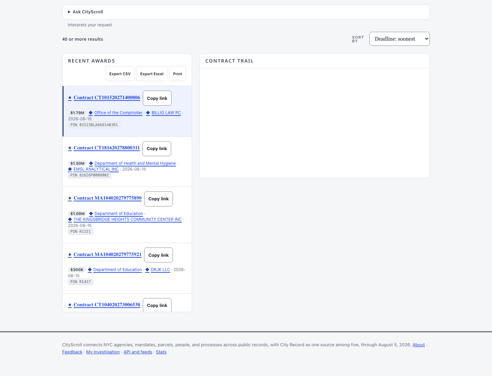
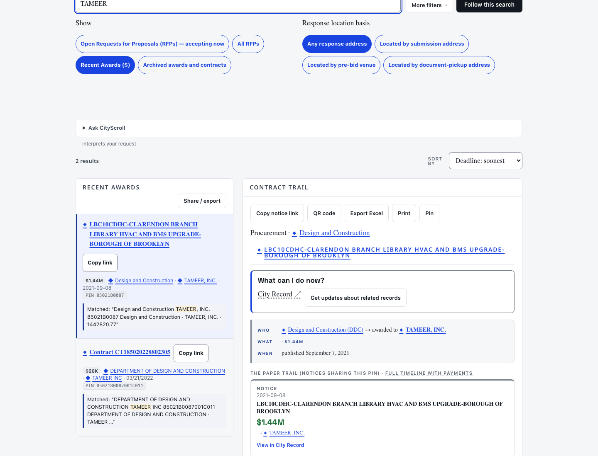
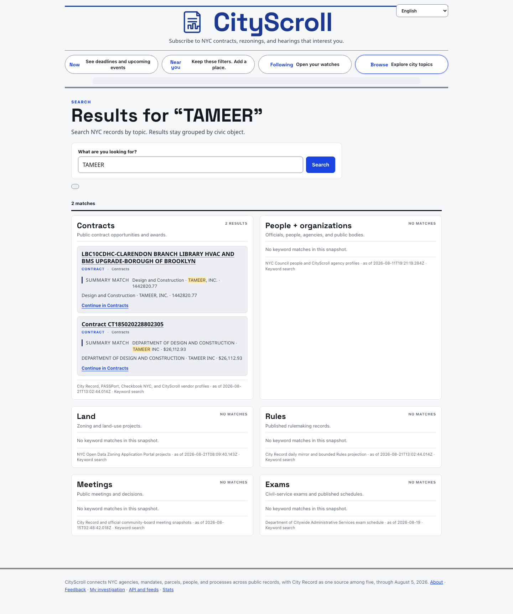
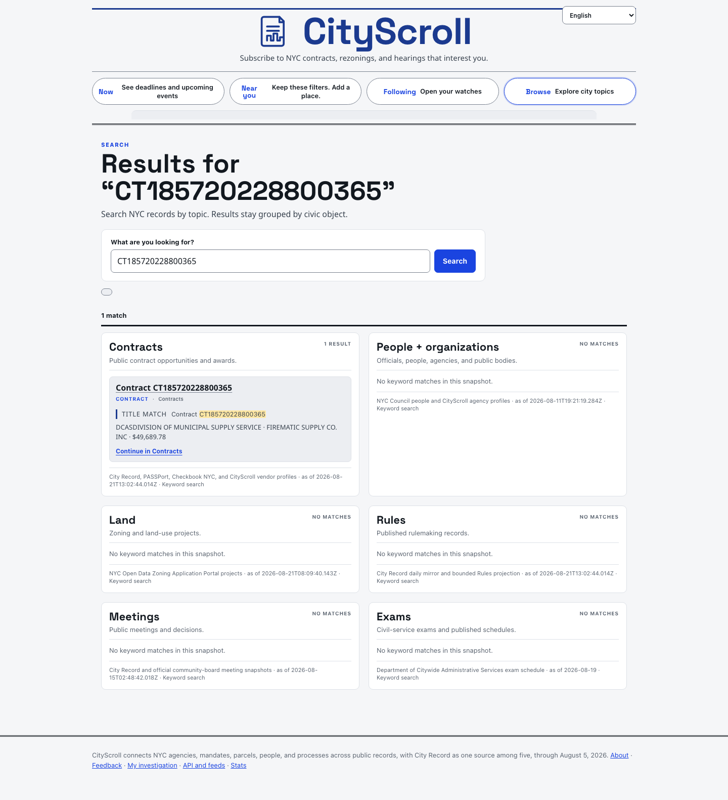
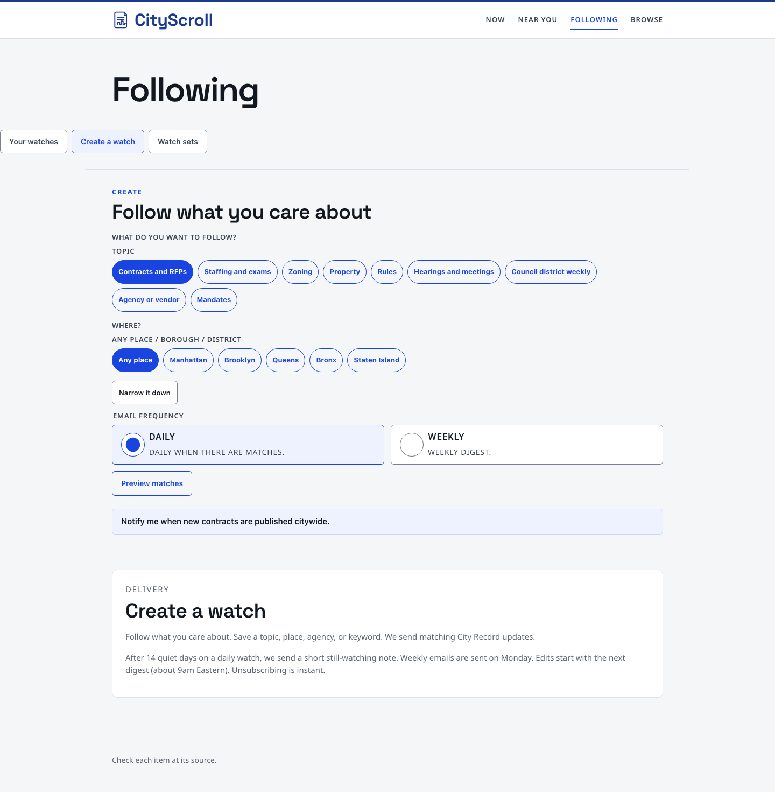

CityScroll scout · 21 August 2026 · for a stakeholder briefing
Does CityScroll already show NYC contracts that are in PASSPort but not in the City Record?
Short answer: a bounded slice is live, and it is not yet at product parity. Search and Browse can open some of those contracts today. Email alerts still follow City Record notices. The richer PASSPort detail (scope, pricing lines, deliverables, place of performance) is not on the public page.
Built
CityScroll can construct a contract object from PASSPort Public and Checkbook without a City Record notice. Canonical pages exist at /procurements/…. Recent Awards on Contracts Browse and keyword Search include those objects. Six kraken cards in this workstream are marked implemented.
In development
The public surface is a sample, not the citywide PASSPort dump. Titles and procurement method are stripped from the committed census, so most non–City Record rows show as “Contract CT…”. Join accuracy for PIN-only matches still needs human review. Coverage labels that would say “small purchase — no City Record notice required” are silent on live rows.
Not yet
Scope, line-item pricing, deliverables, and performance location are not in the public PASSPort dump CityScroll ingests, and they are not on the resident page. Daily email still says it sends City Record updates. Procurement documents have no “Watch this contract” control. Most sub-$100k PASSPort rows are not in the live product.
What we could tell Anna
Feasible, already partly shipping, not a finished selling point.
CityScroll already shows some contracts that never appeared as a City Record award notice — including contracts below the usual $100k notice threshold. A resident can search a vendor such as TAMEER and see a $26,113 registered contract next to a $1.44M City Record award. That is real. It is also thin: the PASSPort-only card is identity plus dollars plus dates, not the full contract file, and following that vendor by email would still watch City Record notices rather than the PASSPort registration itself. Closing the gap is mostly verification, field restoration, and digest wiring — not a greenfield build.
The five questions, with evidence
1. Is there a data path that ingests PASSPort contracts not present in the City Record?
Built for ingest; partial for completeness.
PASSPort Public has no Socrata table. CityScroll downloads the portal dumps (contractData.js / rfxData.js), parses them, and writes Worker tables plus dual-write observations. City Record is not an insert prerequisite. A later census then asks, by exact PIN/EPIN or contract id only, whether a City Record Procurement row exists.
On 18 August 2026 the census parsed 61,240 PASSPort contracts. 8,303 had a small-purchase or micropurchase publisher method. 5,616 of those were not found in City Record by an exact key (67.6%).
Checkbook contracts at or under $100k: 11,746 rows, 11,043 not found in City Record (94%).
The resident product does not use that full census. The committed spine keeps 12,782 award-corroborated PASSPort rows and a 2,000-row Checkbook graph slice. Only 9 of 1,745 Checkbook “PASSPort-only” contracts were selected into that slice.
The public dump has title, program, procurement method, contract type, and industry. The committed spine drops those fields and keeps identity, vendor, agency, amounts, and dates. Scope, deliverables, and location are not columns on the public dump at all.
2. Do those contracts appear in the live product?
Yes, in a bounded Awards list — not in the default Open RFPs view.
Live /browse/contracts/?mode=award (Recent Awards) currently leads with synthetic-title Checkbook/PASSPort rows such as “Contract CT101520271400806”. Keyword “TAMEER” on that list returns two rows: a City Record award and a PASSPort-only $26k registration. Canonical documents resolve at /procurements/procurement%3Acontract%3A… (HTTP 200 on 21 August 2026).
Of 2,218 live procurement objects: 1,184 have a City Record notice, 1,034 do not (21 PASSPort-only, 1,013 Checkbook-only). Under $100k in that bounded set: 2 PASSPort-only, 427 Checkbook-only, 213 PASSPort+City Record.
3. Parity with the rest of the product?
Partial. See the matrix below. Search and Browse work for the sample. Following/email and rich detail do not.
4. Is the “tie award detail back to the original City Record RFP/award” crosswalk working?
Identity join works; detail join is thin; PIN-only matches need review.
On the 2,000-row Checkbook slice, 731 rows match PASSPort (36.6%): 689 by exact contract id, 42 by PIN-family methods. Those 42 include different contract ids sharing a PIN (for example Checkbook CTA184120277200151 ↔ PASSPort MMA1-841-20248803767). That is the class that still needs a person to say “same contract” versus “related instrument.” When a City Record notice does join, the procurement page gets a human title and a City Record link — not PASSPort scope or pricing lines. Award→registration dwell is a separate Human Services strip on notices, not this object.
5. What tests cover this, and what did the census measure?
Focused unit tests cover object identity without request_id, Browse merge, Search producer, Following counts, coverage labels, and the census classifier. The census receipt is committed. There is no live browser test that a PASSPort-only row is watchable by email, and coverage labels currently label 0 of 2,218 live rows because method was stripped upstream.
Live examples (captured 21 August 2026 from cityscroll.org)
PASSPort-only, under $100k — Firematic $49,689.78
No City Record notice on the page. Title is the contract id. Vendor, agency, amount, PIN, and “registered” are present. No method, scope, or Watch control.
Same thin fact list. This row is findable in Search and in Contracts → Recent Awards for “TAMEER”.
Crosswalk-tied, under $100k — Moving Services $47,341.46
PASSPort registration plus a City Record award notice. Title comes from City Record, not PASSPort. Official records link to the notice. Still no PASSPort scope/pricing.
Canonical object with City Record title and notice link.

The City Record notice for the same matter is richer: selection method “M/WBE Noncompetitive Small Purchase,” agency/vendor chips, Watch-adjacent actions. That method does not appear on the procurement object because the PASSPort spine dropped procurement_method.
Checkbook-only, under $100k — Guardian $24,000
Not PASSPort and not City Record in the current object. Still a live /procurements document. Shows the same thin template.
Checkbook-only registered contract, $24k, no City Record provenance block.
Contracts Browse — Recent Awards already mixes non–City Record rows
Default Contracts is Open RFPs (City Record solicitations). Switching to Recent Awards loads the canonical snapshot. The first live rows on 21 August 2026 are synthetic “Contract CT…” titles — including the Comptroller small-purchase legal-services example used in tests.

Live Recent Awards. Lead row is a CROL-negative canonical object, not a City Record award title.

Same vendor, two identities: City Record award ($1.44M, PIN 85021B0087) and PASSPort-only registration ($26k, EPIN 85021B0087001C011). The product currently lists both rather than merging them.
Search
Keyword Search on 21 August 2026:
TAMEER — 2 Contracts hits, including the PASSPort-only $26k object.
Vendor token FIREMATIC — 21 City Record/OCP firefighting awards; the $49k PASSPort-only Firematic row was not among those 21 live results, even though it is in the committed keyword index. Vendor-name recall is therefore not reliable when City Record already owns the token.

Search surfaces the PASSPort-only Tameer contract as a first-class Contracts hit.

Exact contract-id search is the reliable way to retrieve a PASSPort-only row today.
Following

Create-a-watch copy on 21 August 2026: “We send matching City Record updates.” Digest compile for money still queries City Record SODA by request_id. Client Following counts can include CROL-negative rows in tests; email delivery cannot yet.
Parity matrix
Compared with an ordinary City Record award notice (vendor, amount, one-line purpose, Watch, lifecycle, digest).
Feature
City Record award
PASSPort-enriched (has notice)
PASSPort-only / Checkbook-only
Appears in Contracts → Recent Awards
Yes
Yes, in the sample
Yes, in the sample
Default Open RFPs list
Solicitations only
No (registered, not an open RFP)
No
Keyword Search
Yes
Yes when City Record title tokens match
Yes for unique vendor / exact id; can lose to City Record token competition
Canonical document
/notices/<id>
/procurements/… plus notice link
/procurements/… only
Human title / purpose
City Record short title
From the notice
Synthetic “Contract CT…” — PASSPort title is parsed but not published
Scope / pricing lines / deliverables / location
One-line purpose only
Not added from PASSPort
Not in the public dump CityScroll reads
Procurement method / small-purchase label
On the notice when published
Dropped on the object (0/2218 labeled)
Dropped
Watch / Follow this record
Watch this notice
No control on /procurements; notice still watchable
No Watch control
Email digest
City Record SODA / D1
Only if a notice exists
Not compiled — money watches still query City Record
Provenance
Notice + official City Record link
City Record notice href on the object
Facts only; no PASSPort portal handoff, no notice
How much of the world is on the page
Source-row census is not the same as canonical procurements. Counts below are acquired rows or exact-key derivations, 18 August 2026 unless noted.
Layer
What it is
Count
PASSPort Public dump
Parsed non-test contracts
61,240
Small-purchase-like PASSPort
Publisher method contains Small Purch / Micropurchase
8,303
Those not found in City Record
Exact request_id / PIN / contract id
5,616
PASSPort ≤ $100k not found in City Record
Same exact-key rule
4,553
Checkbook ≤ $100k not found in City Record
FY2025–2027 registered expense
11,043
PASSPort small-purchase with a public RFx or City Record solicitation
Exact opportunity join
0
Committed PASSPort spine
Award-corroborated census, not the full dump
12,782
Committed Checkbook graph slice
Cap 2,000; 9 PASSPort-only of 1,745 measured
2,000
Live procurement objects
Shared read model / Browse / keyword family
2,218
Live objects with no City Record notice
PASSPort-only 21 + Checkbook-only 1,013
1,034
Live PASSPort-only ≤ $100k
Firematic $49,690 and Tameer $26,113
2
Purchase-order / direct-order population is explicitly UNKNOWN in the census. A later “we show all small purchases” claim would be false.
The City Record ↔ PASSPort tie
Two different joins exist, and they should not be sold as one:
Identity stitch (built). Exact contract id, or strict PIN↔EPIN (including prefix/suffix variants). Names never join. On the 2,000-row Checkbook slice: 731 matched, 0 ambiguous, 1,269 unmatched. 689 of the matches are exact contract id. 42 matches have different contract-id strings — typical of requirement-contract vs master-agreement / related instrument sharing a PIN. That set is the human-verification queue.
Detail stitch (not built). PASSPort title, method, industry, program are parsed on ingest (and stored on Worker reseed) but omitted from the spine that feeds the public object. Scope, deliverables, unit prices, and performance location are not in the public dump. City Record remains a one-line award notice. The “hackily tie award detail back to the original RFP/award” plan is still that: a plan, plus a notice href when the identity join hits.
Award→registration dwell is a different, notice-mounted Human Services measurement. Contract response-address geography is logistics (submission / pre-bid / pickup), never performance place. Neither fills PASSPort scope.
Projector exists and refuses disclaimer slop. Live rows have no method, so the sentence never renders.
Test coverage
test/procurement_object_contract.test.mjs — CROL-negative observations construct one object.
test/shared_procurement_read_model.test.mjs — CROL-negative remains canonical without a City Record lifecycle.
test/procurement_browse_parity.test.mjs — Browse rows without request_id.
test/universal_search_procurement_producer.test.mjs — indexed without request_id; production corpus ≥1,000 CROL-negative Browse rows.
test/procurement_route.test.mjs — edge document without request_id.
test/procurement_following.test.mjs — Following counts a CROL-negative id once. Does not prove email send.
test/procurement_coverage_labels.test.mjs — labels for exact policy matches.
test/small_purchase_coverage.test.mjs plus node tools/measure_small_purchase_coverage.mjs --check.
test/procurement_policy_registry.test.mjs.
Gaps the tests do not close: live Watch/digest for PASSPort-only ids; human precision on the 42 PIN-family id mismatches; restoring dropped PASSPort title/method onto public rows; browser proof that Recent Awards is the discovery path.
Recommended next cards
These are recommendations only. This scout does not authorize product changes.
p6 · Restore PASSPort public title, method, program, and industry on the resident object
Scope: stop dropping fields the public dump already parses. Synthetic “Contract CT…” titles go away; coverage labels can fire; Search vendor recall improves. Does not claim scope/deliverables.
p7 · Human-verify PIN-family crosswalk mismatches before selling “same contract”
Scope: review the 42 matched rows whose Checkbook and PASSPort contract ids differ (CTA↔MMA1 and similar). Keep exact contract-id matches public; hold or relabel PIN-only related instruments.
p8 · Digest and Watch parity for procurement_id without a City Record notice
Scope: compile money watches against the shared procurement read model (or an equivalent bounded snapshot), not only City Record SODA. Add Watch on /procurements/…. Change Following copy so it does not say City Record-only if PASSPort-only rows can notify.
p9 · Honest expansion of the CROL-negative sample past the 2,000-row Checkbook cap
Scope: the census found 5,616 PASSPort and 11,043 Checkbook CROL-negative small-purchase rows; the live object list has 2 PASSPort-only ≤$100k. Decide a publication cap, selection rule, and freshness clock. Do not imply citywide coverage until that ships.
Scope: measure whether those facts exist anywhere public (authenticated PASSPort, attachments, OCP). Current public dump does not have them. Fail closed if usefulness/precision bars are not met. This is the stakeholder “full contract file” ask; it is not started.
p11 · Discovery UX: Recent Awards as the small-purchase path, plus PIN-sibling grouping
Scope: Open RFPs hides registered PASSPort-only rows by design. Document or retarget that path, and stop listing TAMEER’s $1.44M award and $26k registration as unrelated accidents without an explicit related-instrument treatment after p7.